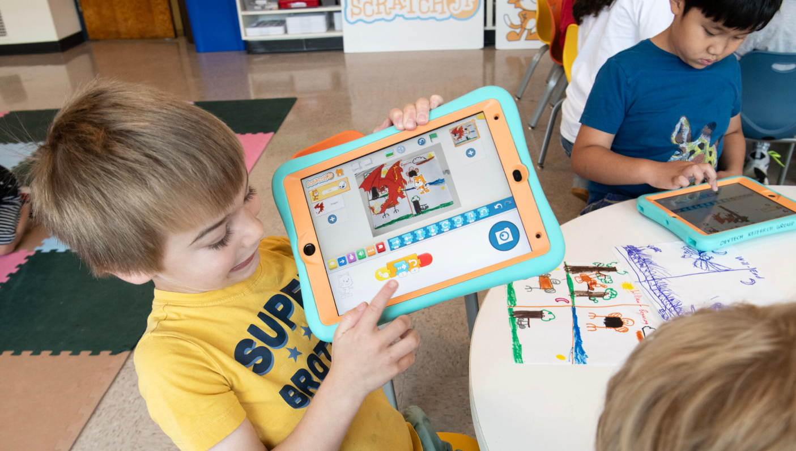

周六下午陪儿子做动画：我怎么被 ScratchJr 圈了粉
幼儿园作业要讲一个小故事，六岁的儿子想把它做成动画。我们翻遍工具箱，最后选了 ScratchJr——一款让 5 岁小孩也能拼出完整故事的图形化编程应用。
周六下午三点，六岁的儿子抱着平板冲进书房，一脸焦虑。幼儿园布置了一个"讲我的星期天"的作业，要求做成小动画，周一带去跟同学们分享。
我第一反应是帮他打开剪映——毕竟自己平时也剪辑视频，工具熟。但十分钟后我就放弃了：时间轴太抽象、转场参数看不懂、拖动音轨更像是在操作一个精密仪器。他坐在我旁边，两只手搭在键盘上，眼睛里从期待变成了茫然。这个作业对他来说不是"做动画"，是"用爸爸的工具做动画"。
我靠在椅背上想了想：有没有一种工具，让他自己动手、自己决定、自己看到结果，我只需要在旁边搭个手就行？
翻了翻以前收藏的软件清单，ScratchJr 从记忆里蹦了出来。去它的官网瞄了一眼确认还在维护——它是麻省理工做的、专门给 5 到 7 岁小孩设计的图形化编程工具，和大家知道的那个 Scratch 同一家，但更简单，不用认字、不用记命令，全是彩色图形积木。我之前看到过介绍但从没真正用过，正好趁这个机会从官方下载装到平板上。
从零开始拼：六色积木的惊喜
打开应用，界面比我想象的干净得多：左边是一块空白的绿色舞台，右边整整齐齐摆着六块彩色圆点，每个圆点下面是一排积木图标。黄色的、蓝色的、紫色的、绿色的、橙色的、红色的——六种颜色，对应六种不同功能。
我点了一下黄色圆点，下面出现了五块积木，有画着小绿旗的、有画着猫爪的、有画着箭头的。儿子一眼就盯住了绿旗那块。我告诉他："这块黄色积木是'什么时候开始'——你点绿旗，它后面的积木就一条一条跑。"
他伸手把绿旗拖到中间那个长条的起点，又去点蓝色圆点——运动积木，箭头朝前朝后朝上朝下，还有跳一跳。他拖了一块朝右的箭头接在绿旗后面，再拖一块说话气泡接上去。气泡里的文字他点了半天，弹出一个大键盘，他歪歪扭扭地用拼音敲了"大家好"四个字。
我按了一下舞台上方的绿旗按钮。小猫从舞台中央向右走了一格，头顶冒出一个气泡，写着"大家好"。
儿子愣了两秒，然后尖叫起来。那不是被我按出来的结果，是他自己拖的第一块积木产生的第一个效果。这种即时反馈——拖一块、接一块、点绿旗、立刻看到动作——是剪映那堆参数给不了他的。

声音和外观：让故事"活"起来
第一版脚本只有三块积木：绿旗、走一步、说一句话。接下来我们得让这个故事有起伏。
我带他点紫色圆点——外观积木。六块：说话、变大、变小、恢复大小、隐藏、显示。他把"变大"接在说话气泡后面，绿旗再按一次——小猫说完"大家好"，"咔"的一声比刚才大了一圈。他又拖了一块"变大"接上去，再按绿旗，小猫又大了一圈。连续拖了三四块之后，小猫在舞台上占了快一半。我提醒他："有块叫'恢复大小'的，可以让它回到原来的样子。"他找了出来，接在最后，果然小猫变回了正常尺寸。
然后他发现了隐藏积木——小猫"嗖"的一下消失了，再按绿旗也不出来。我告诉他隐藏不是删除，它只是看不见了。他试着在隐藏后面接了一块显示积木，再按绿旗，小猫在舞台边缘淡入出现，儿子又尖叫了一次。
让故事"活"起来的关键是声音。绿色圆点下只有两块积木，其中一块是麦克风图标。我点了它，选中小猫这个角色，弹出录音面板，按住说话。我让儿子对着平板说"小猫要去公园啦"，他压低了嗓子装成小猫的声音，录了一遍又一遍才满意。保存之后把"播放录音"积木拖到脚本开头，点绿旗，他自己的声音从平板里传出来——这一刻他抱着平板跑遍了整个客厅，让每个人都听。
舞台里的隐形格子
做到这里，儿子想让小猫从舞台左边一直走到右边。他接了五块朝右的箭头，小猫走了五步，还没到边。他又加三块，还是差一点。我想起了之前在scratchjr文档里看到过网格开关的说明——ScratchJr 的舞台底下铺着一张十列六行的隐形格子网，每一块运动积木上的数字就是走几格。我点了工具栏上那个九宫格图标，舞台上立刻出现了清晰的坐标线。
"你看，从这里到这里一共十格。你填数字十，小猫一步就走十格，横穿整个舞台。"
儿子盯着网格看了好一会儿，把五块箭头全删掉，换成一块朝右、数字改成 10 的积木。绿旗按下去，小猫从左边一步冲到右边。他盯着网格线又想了想，把数字改成 5，小猫只走了一半；改成 2，只走了两格——他在自己试数字和格数的对应关系，这比我给他讲任何坐标系概念都管用。
收尾：三个角色在公园相遇
整个下午过去了。儿子的故事里有三只角色：小猫从左边走过来、小狗从右边走过来、小兔子从下面跳上来。小猫走到舞台中间说"大家好"，小狗变大一圈回应，小兔子隐藏起来又在他们身后显示。三只角色的声音都是儿子自己录的——小猫的喵喵声、小狗的汪汪声、小兔子的叽叽声，混在一起像个混乱但开心的动物园。
周末的电脑屏幕上停着 ScratchJr 的编辑界面，六个颜色的积木排成一条长长的脚本，舞台里三只角色在各自的格子里站着它们的"家"。儿子已经拿着平板跑去找隔壁的小表妹展示了，说"我今天给小猫小狗小兔子都录了声音"。
我靠在椅子上想，给小孩挑工具这件事，最简单的答案往往是最好的——ScratchJr 不用账号注册、不用联网、没有付费弹窗、积木图标和功能一一对应。它的设计哲学其实很朴素：先让孩子做出来一个能看到的东西，再在做的过程中学会那些"编程"的概念。网格里藏着坐标思维、积木颜色对应功能分类、隐藏与显示是事件控制——但这些术语是长大以后才需要知道的。对一个六岁的孩子来说，他今天学到的是：拖一块积木、接一块、按绿旗、世界会有反应。
这套积木的资料和完整文档在三个仓库都能拿到——GitHub 是主仓库，国内访问慢的朋友可以直接去Gitee 或GitCode 拿同样的内容。社区也一直在更新各种有趣的示例项目——如果以后想做更复杂的动画，还可以往上升到 Scratch 本身。今天这个周六下午的小项目，说不定是某个小想法的第一个脚印。